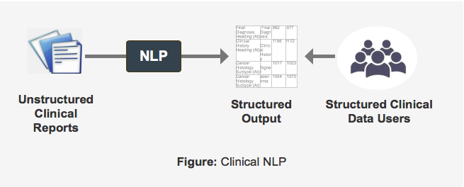

In this section, learn basic NLP terminology, common NLP approaches, the importance of context and language models in NLP as well as a brief history of NLP.
NLP is the field of computational methods for processing the linguistic characteristics of textual documents. This processing takes unstructured text documents and puts them into a structured, standardized format that perseveres the meaning of the original document. NLP aims to build automatic methods to identify target semantic objects in a text. In this manner NLP is a service used by other analytical tasks to extract target content from prose documents.
Clinical NLP is the application of general NLP methods to clinical documents. Some processing methods need significant changes compared to common English texts due to specialized language, grammatical structures and neologisms created by clinical authors. Clinical NLP covers all clinical documents such as pathology, radiology reports, discharge summaries and ward notes to mention just a few.

NLP has been a task addressed by researchers since the earliest invention of computing.
NLP is a part of the computer science field, Artificial Intelligence (AI). It is the area of AI concerned with tasks associated with language. NLP is a multidisciplinary field including statistics, computer science, and linguistics. As NLP research has grown over the years, NLP has become its own discipline with its own specialized approaches and methodologies.
Computational Linguistics: Early on NLP was a discipline of its own standing known as computational linguistics. The first 30 years of Computational Linguistics was strongly focused on converting the knowledge of linguistics and particularly grammar into a form a computer can understand known as an algorithm.
Machine Learning and Statistical NLP: From the 1990s onwards the role of linguistics has taken a backseat to the methods of computer scientists particularly the use of machine learning algorithms. These methods have been encompassed by the label, Statistical NLP, which is now the foundation of much of the research in the field and a backdrop for the Clinical Language Engineering Workbench (CLEW).
The Influence of Google and Search Engines: The rise of Google led to another line of language computational development to create the field of Information Retrieval which discards the heritage of linguistics altogether and focuses on the statistical distributions of words alone within texts without considering their lexico-grammatical characteristics. This method, known as bag-of-words, treats each word as independent ignoring the linguistic characteristics of the text under analysis. Subsequently, the Information Retrieval field has developed, riding on the practical benefits brought about by the Google search engine, to emerge as the field better known as Text Mining.
A word is understood by the company it keeps: A more recent modification in philosophy if not method has adopted the simple maxim “a word is understood by the company it keeps” and computes with the surrounding context of words as well as the word itself. This is a small sign of turning back to the foundations of NLP and computational linguistics but its future pathway is still unclear.
There are various methods and approaches for processing unstructured documents. Common approaches are described below.
Text Mining is the strategy of using rules to find target content in the text. The rules can be expressed in a variety of ways but the most common form is Regular Expressions (Regex). This is the method of defining a template pattern to search for in the text.
Rapid identification of defined strings.
Does not find things with the same semantics but expressed in a different orthographical form. For example, a search for “cat” will not find “feline”. This is its most serious limitation.
Propensity to over generalize as an experimenter seeks to find more examples of their target information. Text mining solutions can generalize the search expressions and begin to capture orthographically similar content, so “catnap” appears in their data search as an unwanted false positive.
Text mining treats text as what is commonly called a bag of words with no concessions to word order and sentence structure. This is a serious limitation for many domains, including the clinical domain, where word order and sentence structure provide information needed to provide correct context and meaning.
A domain where text mining is successful is internet search. This method is closely aligned with information retrieval. Information retrieval is the great strength of Google. Google uses text mining to find documents containing target text strings. Google also compresses text by eliminating various grammatical features such as removing the ends of words and ignoring what are called “filler” words, for example, “the” and “which”.
Computational Linguistics (CL) is the study of computational methods for identifying grammatical and semantic parts of sentences. It is as old as computing itself and was originally driven by linguists. Today it is a specialist discipline of computer science.
Considers great detail of a sentence, word order, word proximity, word groupings, word on the left, word on the right, etc. and is engaged in how to parse sentences and understand their meaning.
It requires significant linguistic knowledge and is difficult to implement, although this has been made easier in the modern era with a lot of open source software now available.
Machine Learning (ML) is a discipline of computer science that has merged with statistics. It represents a form of Algorithmic Statistics. It’s earliest origins are in the 1970s with algorithms to build decision trees and divide data sets into statistically similar classes. Machine Learning has morphed into a discipline with various methods for classifying heterogeneous data sets. It has found new application areas such as computational linguistics.
Is able to model the varying contexts in which a word or phrase changes its meaning and therefore resolve when the same text means one thing or another.
Is able to identify the use of new words for the same meaning that have never been presented in the training set.
Costly to prepare training data and build the language model.
Needs a program of revision for changes over time.
The steps in machine learning are, first, the machine learner builds a language model by using multiple known classes and their attributes from a manually annotated set of documents. The language model includes a distribution of the attribute values for each class. Next, text is input to the machine learner and assigned to a class based on a profile of attribute values in the language model (learn more about the language model below).
The Language Model, also know as the Classifier, is built by the Machine Learner.
An NLP pipeline builds up a series of attribute values for each word in the text, such as its part -of-speech, its grammatical role, its neighboring words. The Machine Learner compiles the profile of these attribute values for all words in the same class. The Language Model then represents the distribution of these attributes over all words and their classes (aka labels).
When you submit a new file to the Language Classifier you must first compute all its feature values using the NLP pipeline. Each word is submitted to the Language Model and is classified, that is, assigned a semantic label.
If the submitted file has been manually annotated as with the training files then comparison can be made between the labels assigned by the Language Model and the original manually assigned labels. Differences indicate either an error in the original annotation ( human error) or if the Language Model fails to identify an annotation then it doesn’t have enough training information to correctly identify that context for assigning the appropriate label to that word. One must then return to the annotations and correct them or return to the NLP pipeline and enhance the pipeline so it can recognize the appropriate context it previously missed (this requires imagination and ingenuity to understand what new features must be inserted into the NLP pipeline to enhance the Language Model’s learning ability).
Statistical NLP (SNLP) was created in the 1990s when Machine Learning was introduced into Computational Linguistics.
Initially identifying grammatical and semantic constituents was considered a task of identifying different sentential elements as a classification problem with the attributes of each word defined by the surrounding words and their orthographical characteristics.
Over time significant effort has been put into collecting more content about words and their context. This means other resources such as ontologies have become available to add to the attribute, aka features set, of words to build more elaborate machine learning models.
Can recognize members of the designed classes it has not seen in its training because it recognizes the context of the class member. For example, a search for the concept, lung cancer, will return hepatocellular carcinoma. Initially, a training set must be compiled manually to train the Machine Learner. This involves manually annotating a sufficient number of documents with target classes and attributes so that the Machine Learner can reliably classify unseen, unclassified data.There are certain problems in identifying semantic concepts that require strong recognition of the context to correctly assign an appropriate semantic tag to a token or set of tokens.
Example: Separating pairs of organs from single organs.
Context is partly the tokens surrounding a focus token. These are referred to as the neighboring tokens. However, there is additional knowledge that also represents its context. This additional context includes, part of speech, grammatical relationships, groups of tokens in coherent phrases, section of the document where the phrases are used and clinical knowledge about the phrases. These items of additional knowledge are known as data elements or attributes and when extended to include the same data elements from neighboring tokens represents the feature set of the language model.This additional knowledge adds to the context richness. An NLP solution identifies and builds this context.
A consideration in an NLP solution is when to stop adding neighbors into the feature set of the focus token. Many experiments have investigated the optimal length of the window to the left and right of the focus token for statistical language modelling. The results for English are to use between 3-7 tokens on the left and 1-3 tokens on the right.
An important difference between Rule-based NLP and Statistical NLP is their treatment of context.
Context is treated more richly in Statistical NLP. The tradeoff is that the richer the context, the more analysis required. This means (1) more elaborate and complicated models, (2) more computing time to build and run, (3) more complex interactions and (4) more iterations on the NLP solution when trying to improve its accuracy.
While rule-based NLP solutions can be developed more quickly they can also over generalize more easily. Statistical NLP is more tedious to build but over generalizes less and can identify content that is not represented in its training materials. A drawback, however, is it can fail to recognize content correctly even though it is in its training set. This failure is principally due to a lack of statistical density of the target context.
In a hybrid approach Rule-based systems can provide an initial evaluation of tokens which can then be used as a feature to be a part of the Statistical NLP modelling. This approach has been shown to be effective in improving Statistical NLP models.
Language Engineering is a recent term that refers to using Statistical NLP to solve a practical, real world problem. It recognizes there is a difference between the research world of Statistical NLP and applying current research results to an applied effort by a group of people seeking efficiencies in their workplace.
Often Statistical NLP is only a part of a Language Engineering task. Such efforts must also consider the accuracy of the operational system as well as its impact in the workplace. A combination of different NLP strategies are typically used to resolve a client’s needs.
Conversion of free form or prose text into structured clinical data enable aggregation of like content across many different source descriptions of the same events or findings.
This data can then provide most systematic representation of these events and findings and thereby improve automatic reuse of the data in other systems.
Machine learning methods are commonly used to build NLP models. ClearTK (https://cleartk.github.io/cleartk/) is one of the most popular machine learning applications based on the UIMA framework. It provides a common interface and wrappers for popular machine learning libraries (such as LibSVM, CRF and Mallet) and NLP tools (OpenNLP, Stanford CoreNLP, etc.). As such, ClearTK has been utilized in CLEW to train NLP models and perform various of classification tasks, such as clinical semantic entity recognition.